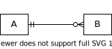
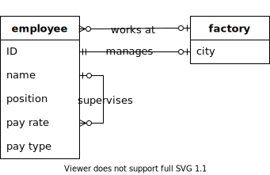
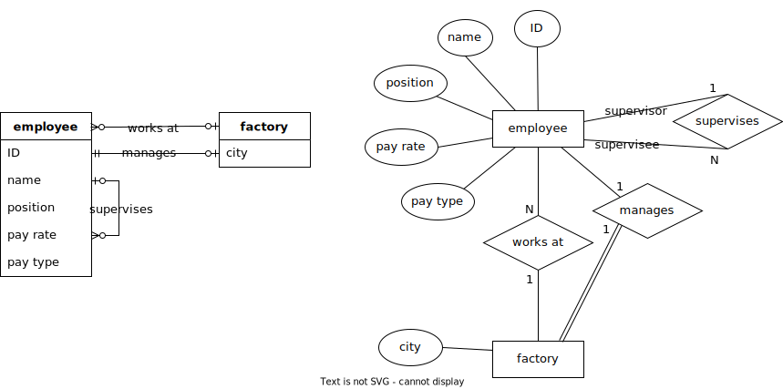

2.4. ERD 替代方案和变体¶
ERD alternatives and variations
在本章中，我们探讨替代陈述法(Chen notation)的实体-关系数据建模以及其他变体。我们从 乌鸦脚 符号开始，这是实体-关系建模中一种流行的符号。我们将展示如何使用基本的乌鸦脚符号在较低的抽象层次上建模关系数据库。最后，我们将概述一些您在陈述法和乌鸦脚符号中可能遇到的更常见的变体。整个过程中使用的示例对应于 Chapter 2.2 中开发的计算机制造商数据模型。
In this chapter we explore alternatives to Chen notation entity-relationship data modeling as well as other variations. We start with crow’s foot notation, a popular notation for entity-relationship modeling. We will show how the basic crow’s foot notation can be used to model relational databases at lower levels of abstraction. We will finish with an overview of some of the more common variations you are likely to encounter in both Chen and crow’s foot notation. The examples used throughout correspond to the computer manufacturer data model developed in Chapter 2.2.
2.4.1. 乌鸦脚符号¶
Crow’s foot notation
“乌鸦脚”是指一系列建模符号的昵称，这些符号起源于 1976 年戈登·埃弗雷斯特(Gordon Everest)的一篇 论文。自那时以来，该符号已被广泛采用、扩展和修改。这个名字来源于用来表示关系中“多”基数的符号，它类似于乌鸦的脚(埃弗雷斯特最初称这个符号为“倒箭头”，后来称为“叉”)。
“Crow’s foot” is the nickname given to a family of modeling notations that originated in a paper by Gordon Everest in 1976. The notation has been widely adopted, expanded, and modified since. The name comes from the symbol used to represent the “many” cardinality in relationships, which resembles a crow’s foot (Everest originally called the symbol an “inverted arrow”, and later a “fork”).
2.4.1.1. 实体关系建模¶
Entity-relationship modeling
在乌鸦脚符号中，实体用简单的矩形表示。实体可以仅用名称标记以实现更高层次的抽象，或者可以包含名称和属性列表。关键属性可以通过多种方式表示；我们将用粗体和下划线样式表示关键。 在我们的示例数据模型中，我们有一个实体用于建模关于我们虚构的计算机制造商员工的数据：
关系用连接实体的线表示。基数比率通过不同的线端符号指定。可能的基数如下：
零或一个 |
|
一个 |
|
零或多个 |
|
一个或多个 |
这些基数符号有两个部分。离实体最近的符号表示最大基数——要么是 一 (用垂直线表示)，要么是 多 (用分支的“乌鸦脚”表示)。离实体更远的符号表示最小基数——要么是 零 (用开放圆表示)，要么是 一 。最小基数为一有时用实体是 强制的 来描述，而最小基数为零表示 可选 实体。
考虑下面所示的关系：
该图告诉我们，A 实体的一个实例可以与零个或多个 B 实体的实例关联。一个 B 实体的实例必须与恰好一个 A 实体的实例关联。
关系还可以用文本进一步注释，以命名或描述关系。
在我们的示例数据模型中，employee 实体参与了与其自身及 factory 实体的多个关系：
基本的乌鸦脚符号可以扩展以包含与陈符号相同的高级元素，例如复合、派生和多值属性、弱实体和部分键、关系属性以及更高的基数关系。不同的绘图和建模工具可能提供或不提供对这些元素的直接支持，符号的变化也很大。
一些数据库设计师更倾向于使用乌鸦脚符号而不是陈符号进行实体-关系建模，部分原因在于其相对紧凑的形式。我们可以将上述图与其在陈符号中的等效图并排比较：
最终，您使用哪种符号将取决于您的偏好以及您在特定项目中与之合作的人员的偏好。
In crow’s foot notation, entities are represented with simple rectangles. Entities can be labeled simply with a name for a higher level of abstraction, or they can contain a name and a list of attributes. Key attributes can be indicated in various ways; we will style keys with bold type and underlining. In our example data model, we have an entity modeling data regarding employees of our fictional computer manufacturer:
Relationships are represented with lines connecting entities. Cardinality ratios are specified with different line ending symbols. The possible cardinalities are:
Zero or one |
|
One exactly |
|
Zero or more |
|
One or more |
These cardinality symbols have two parts. The symbol closest to the entity indicates the maximum cardinality - either one (represented by a vertical line) or many (represented by the branching “crow’s foot”). The symbol further from the entity indicates minimum cardinality - either zero (represented by the open circle) or one. A minimum cardinality of one is sometimes stated in terms of the entity being mandatory, while a minimum cardinality of zero indicates an optional entity.
Consider the relationship pictured below:
This diagram tells us that an instance of the A entity can be associated with zero or more instances of B. An instance of B must be associated with exactly one instance of A.
Relationships may be further annotated with text to name or describe the relationship.
In our example data model, the employee entity participates in several relationships with itself and the factory entity:
![Entities employee and factory and their relationships; the employee entity has attributes ID (key), name, position, pay rate, and pay type; the factory entity has the key attribute city; the relationships are the many-to-one (optional on both sides) relationship between employee and factory labeled "works at", the one-to-one (exactly one on the employee side) relationship between employee and factory labeled "manages", and the many-to-one (optional on both sides) relationship between employee and itself labeled "supervises".](../../_images/crows_foot_relationships.svg)
The basic crow’s foot notation can be extended to encompass the same advanced elements as Chen’s notation, such as composite, derived, and multivalued attributes, weak entities and partial keys, relationship attributes, and higher arity relationships. Different drawing and modeling tools may or may not provide direct support for these, and notations vary widely.
Some database designers prefer crow’s foot notation over Chen’s notation for entity-relationship modeling, in part due to its relatively compact form. We can compare the above diagram side-by-side with its equivalent in Chen notation:
Ultimately which notation you use will depend on your preferences and the preferences of the people you are working with on a given project.
2.4.1.2. 低级模型¶
Lower level models
到目前为止，我们一直在讨论抽象层次的数据建模，我们可以称之为 概念 层。在概念层，重点在于基本数据实体及其关系，而不是实现它们所需的关系数据库结构。例如，在概念建模中，我们通常不包括交叉引用表的描绘，这在实现多对多关系时是必要的，但这些表本身并不代表感兴趣的实体。我们可以说，概念模型专注于 数据 而不是 数据库。
在下一个抽象层次是 逻辑 模型，它包括从应用 Chapter 2.3 中描述的技术所产生的所有关系数据库结构。乌鸦脚符号非常适合在这个层次上建模。
以下展示了我们示例数据模型的两个部分的概念和逻辑版本。逻辑模型中的矩形现在代表实际的表，并列出表中的所有列。我们用粗体和下划线表示参与主键的列；外键列用斜体表示。逻辑模型通常包括数据类型，但我们现在省略这些细节。
一个概念模型，显示实体 employee 和 factory 及其关系。¶
从上述概念模型构建的逻辑模型。注意两个表中外键列的添加。¶
一个概念模型，显示实体 part 和 vendor 及其之间的多对多关系。该关系具有一个属性，我们已将其显示为连接到关系线的矩形。¶
从上述概念模型构建的逻辑模型。多对多关系已实现为一个交叉引用表。¶
如果我们选择，还可以添加更多细节来创建 物理 模型。物理模型肯定会包括数据类型以及对列或表的任何约束，并可能包括诸如索引或表在磁盘或网络上位置的细节。
每个抽象层次都有其价值，但是否在特定层次创建模型将取决于您的需求。如 Chapter 2.2 中讨论的，最高抽象层次的模型在开发数据库的早期阶段以及与项目中各种利益相关者沟通时特别有价值。概念模型可以直接用于生成数据库，或者您可能更倾向于创建逻辑模型作为中间阶段。另一方面，对于某些项目，您可能会跳过概念层，直接开始使用逻辑模型。保持逻辑模型作为数据库的文档是非常有用的；在大型复杂的数据库中，即使是数据库的常规用户也可能忘记表和列的名称！物理模型主要由数据库管理员（DBA）在非常复杂的项目中使用，通常是在可以生成创建数据库的 SQL 代码的软件工具中创建。
We have so far been discussing data modeling at an abstract level, which we might call the conceptual level. At the conceptual level, the emphasis is on the fundamental data entities and their relationships, rather than the relational database constructs necessary to implement them. For example, in conceptual modeling we typically do not include depictions of cross-reference tables, which are necessary in the implementation of many-to-many relationships, but which do not themselves represent entities of interest. We might say that the conceptual model is focused on the data rather than the database.
At the next level of abstraction lives the logical model, which includes all of the relational database structure that results from applying the techniques described in Chapter 2.3. Crow’s foot notation is well suited to modeling at this level.
Below we show the conceptual and logical versions of two parts of our example data model. Rectangles in the logical model now represent actual tables and list all columns in the table. We show columns participating in primary keys in boldface and underlined; foreign key columns are italicized. Logical models often include data types, but we have omitted those details for now.
A conceptual model showing entities employee and factory and their relationships.¶
The logical model constructed from the above conceptual model. Note the addition of foreign key columns in both tables.¶
A conceptual model showing entities part and vendor and the many-to-many relationship between them. The relationship has an attribute, which we have shown as a rectangle connected to the relationship line.¶
The logical model constructed from the above conceptual model. The many-to-many relationship has been realized as a cross-reference table.¶
If we choose, we can add even more detail to create a physical model. The physical model would definitely include data types as well as any constraints on columns or tables, and might include details such as indexes or even where a table lives on disk or on the network.
Each level of abstraction has value, but whether or not you create models at a particular level will depend on your needs. As discussed in Chapter 2.2, models at the highest levels of abstraction are particularly valuable in the early stages of developing a database, and in communicating with all of the various stakeholders in a project. The conceptual model can be used to produce a database directly, or you may prefer to create a logical model as an intermediate stage. On the other hand, for some projects you may skip the conceptual level and start with a logical model. It can be very useful to maintain a logical model as documentation for a database; with large and complex databases, even regular users of the database can forget the names of tables and columns! Physical models are mostly used by database administrators (DBAs) on very complex projects and are usually created in software tools that can also generate the SQL code to create the database.
2.4.2. 常见变化¶
Common variations
大多数数据建模的可视化语言在不同程度上源于陈氏符号或乌鸦脚符号，尽管也存在替代方案。一种流行的替代方案是 *统一建模语言*（UML）。虽然 UML 并非专门用于数据库设计，但它已被调整以满足这一目的。UML 特别适用于涉及实体继承层次结构的更高级设置。陈氏符号也已为这些设置进行了扩展。我们在本书中不讨论继承。
所有数据建模语言都有一些共同点，例如实体、属性、键、关系和基数比率。大多数都有参与或最小基数的概念。基本概念是相同的，但符号有所不同。我们在下面概述您可能遇到的最常见的变体。
Most visual languages for data modeling derive in greater or lesser degree from Chen’s notation or crow’s foot notation, although alternatives exist. One popular alternative is the unified modeling language (UML). While UML is not specifically intended for database design, it has been adapted for the purpose. UML is especially applicable in more advanced settings involving inheritance hierarchies for entities. Chen’s notation has also been extended for these settings. We do not cover inheritance in this book.
All data modeling languages share certain commonalities, such as entities, attributes, keys, relationships, and cardinality ratios. Most have some notion of participation or minimum cardinality. The basic concepts are the same, but the notations vary. We give an overview of the most common variations you are likely to encounter below.
2.4.2.1. 基数比率和参与度¶
Cardinality ratios and participation
参与和最小基数在处理二元关系时可以等同。如果一个实体在二元关系中有完全参与，那么另一个实体的最小基数为一（或至少不是零）。反之，实体的部分参与意味着另一个实体的最小基数为零。通常，您将使用参与或最小基数，而不是两者。
This book |
Alternative notation |
|
|---|---|---|
Partial participation |
||
Total participation |
Crow’s foot notation |
Alternative notations |
||
|---|---|---|---|
Zero or one |
|||
Exactly one |
|||
Zero or more |
|||
One or more |
|||
Specified min/max |
|||
Participation and minimum cardinality can be equated when working with binary relationships. If an entity has total participation in a binary relationship, then the minimum cardinality of the other entity is one (or at least, not zero). Conversely, partial participation of an entity implies a minimum cardinality of zero for the other entity. Typically you will use either participation or minimum cardinality, but not both.
This book |
Alternative notation |
|
|---|---|---|
Partial participation |
||
Total participation |
Crow’s foot notation |
Alternative notations |
||
|---|---|---|---|
Zero or one |
|||
Exactly one |
|||
Zero or more |
|||
One or more |
|||
Specified min/max |
|||
2.4.2.2. 属性¶
Attributes
在我们上面的乌鸦脚逻辑模型展示中，我们使用文本样式（加粗和下划线）来表示主键。我们使用斜体来表示外键。许多绘图和建模工具同样使用文本样式来指示键，但不一定是我们使用的样式。这些工具也可能使用背景色或前景色来表示键和列的其他属性。
许多工具还会（或直接）用文本指示符来表示主键和外键列，通常为“PK”和“FK”。一些工具通过将主键与其他列分开来突出显示主键：
In our presentation of crow’s foot logical models above, we used text styling (boldface and underlining) to indicate primary keys. We used italics to indicate foreign keys. Many drawing and modeling tools similarly use text styling to indicate keys, although not necessarily the styling we used. Tools may also or instead use background or foreground colors to indicate keys and other properties of columns.
Many tools will also (or instead) indicate primary and foreign key columns with text indicators, usually “PK” and “FK”. Some will highlight primary keys by separating them from the other columns: